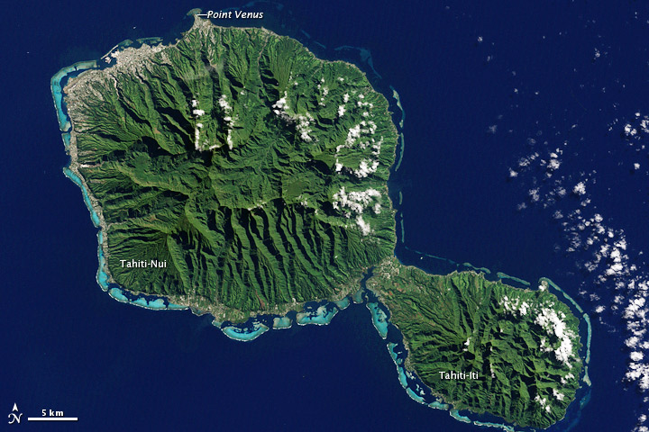
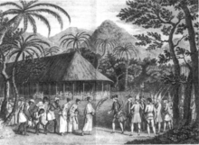
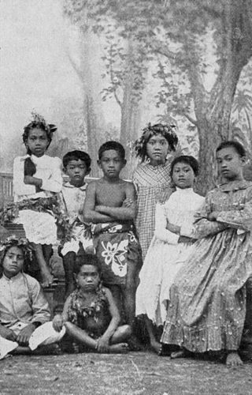
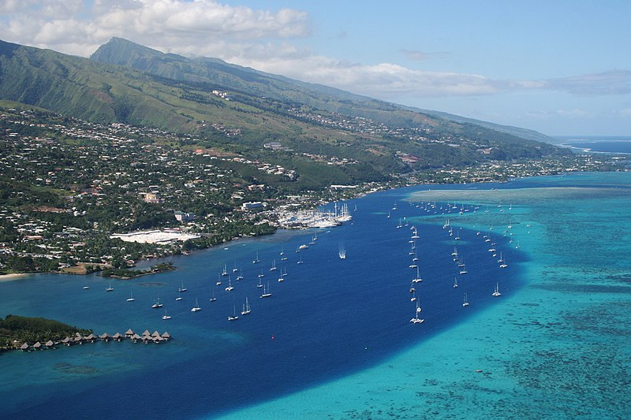
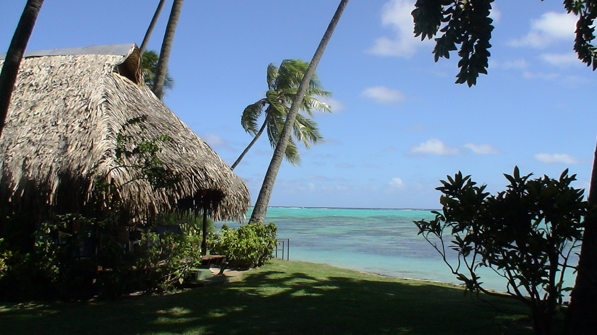

Tahiti: The Beauty of French Polynesia
Tahiti is the largest island of the Windward group of the Society Islands in French Polynesia, located in the central part of the Pacific Ocean. Divided into two parts, Tahiti Nui (bigger, northwestern part) and Tahiti Iti (smaller, southeastern part), the island was formed from volcanic activity; it is high and mountainous with surrounding coral reefs. Its population is 189,517 inhabitants, making it the most populous island of French Polynesia and accounting for 68.7% of its total population.Tahiti is the economic, cultural, and political centre of French Polynesia, an overseas collectivity (and the sole overseas country) of the French Republic. The capital of French Polynesia, Papeete, is located on the northwest coast of Tahiti. The only international airport in the region, Faa'a International Airport, is on Tahiti near Papeete. Tahiti was originally settled by Polynesians between 300 and 800 CE. They represent about 70% of the island's population, with the rest made up of Europeans, Chinese, and those of mixed heritage. The island was part of the Kingdom of Tahiti until its annexation by France in 1880, when it was proclaimed a colony of France, and the inhabitants became French citizens. French is the only official language, although the Tahitian language (Reo Tahiti) is widely spoken.
Geography

Tahiti is the highest and largest island in French Polynesia lying close to Mo'orea island. It is located 4,400 kilometres (2,376 nautical miles) south of Hawaii, 7,900 km (4,266 nmi) from Chile, 5,700 km (3,078 nmi) from Australia.[citation needed]The island is 45 km (28 mi) across at its widest point and covers an area of 1,045 km2 (403 sq mi). The highest peak is Mont Orohena (Mou'a 'Orohena) (2,241 m (7,352 ft)). Mount Roonui, or Mount Ronui (Mou'a Rōnui), in the southeast rises to 1,332 m (4,370 ft). The island consists of two roughly round portions centered on volcanic mountains and connected by a short isthmus named after the small town of Taravao, which is situated there.[citation needed]The northwestern portion is known as Tahiti Nui ("big Tahiti"), while the much smaller southeastern portion is known as Tahiti Iti ("small Tahiti") or Tai'arapū. Tahiti Nui is heavily populated along the coast, especially around the capital, Papeete.[3]The interior of Tahiti Nui is almost entirely uninhabited.[3] Tahiti Iti has remained isolated, as its southeastern half (Te Pari) is accessible only to those travelling by boat or on foot. The rest of the island is encircled by a main road which cuts between the mountains and the sea.[citation needed]A scenic and winding interior road climbs past dairy farms and citrus groves with panoramic views. Tahiti's landscape features lush rainforests and many rivers and waterfalls, including the Papenoo River on the north side and the Fautaua Falls near Papeete.
History

Early colonization of Tahiti
The first Tahitians arrived from Western Polynesia sometime around 1000 CE, after a long migration from South East Asia or Indonesia, via the Fijian, Samoan and Tongan Archipelagos. This hypothesis of an emigration from Southeast Asia is supported by a range of linguistic, biological and archaeological evidence. For example, the languages of Fiji and Polynesia all belong to the same Oceanic sub-group, Fijian–Polynesian, which itself forms part of the great family of the Austronesian languages.This emigration, across several hundred kilometres of ocean, was made possible by using outrigger canoes that were up to twenty or thirty meters long and could transport families as well as domestic animals. In 1769, for instance, James Cook mentions a great traditional ship (va'a) in Tahiti that was 33 m (108 ft) long, and could be propelled by sail or paddles. In 2010, an expedition on a simple outrigger canoe with a sail retraced the route back from Tahiti to Asia.
First European Visits
Portuguese navigator Pedro Fernandes de Queirós, serving the Spanish Crown in an expedition to Terra Australis, was perhaps the first European to set eyes on the island of Tahiti. He sighted an inhabited island on 10 February 1606 which he called Sagitaria (or Sagittaria). However, whether the island that he saw was actually Tahiti or not has not been fully ascertained. It has been suggested that he actually saw the island of Rekareka to the south-east of Tahiti. According to other authors the first European to arrive in Tahiti was Spanish explorer Juan Fernández in his expedition of 1576–1577. The next European visitors arrived during the period of intense Anglo-French rivalry that filled the twelve years between the Seven Years' War and the American Revolutionary War. The first European to have visited Tahiti according to existing records was Captain Samuel Wallis, who was circumnavigating the globe in HMS Dolphin,[18] sighting the island on 18 June 1767, and eventually harbouring in Matavai Bay. This bay was situated on the territory of the chiefdom of Pare-Arue, governed by Tu (Tu-nui-e-a'a-i-te-Atua) and his regent Tutaha, and the chiefdom of Ha'apape, governed by Amo and his wife "Oberea" (Purea). Wallis named the island King George's Island. The first contacts were difficult, since on the 24 and 26 June 1767, Tahitian warriors in canoes showed aggression towards the British, hurling stones from their slings. In retaliation, the British sailors opened fire on the warriors in the canoes and on the hills. In reaction to this powerful counter-attack, the Tahitians laid down peace offerings for the British. Following this episode, Samuel Wallis was able to establish cordial relations with the female chieftain "Oberea " (Purea) and remained on the island until 27 July 1767.
French protectorate and the end of the Pōmare kingdom
In 1836, the Queen's advisor Pritchard had two French Catholic priests expelled, François Caret and Honoré Laval. As a result, in 1838 France sent Admiral Abel Aubert Dupetit-Thouars to get reparation. Once his mission had been completed, Admiral Du Petit-Thouars sailed towards the Marquesas Islands, which he annexed in 1842. Also in 1842, a European crisis involving Morocco escalated between France and Great Britain, souring their relations. In August 1842, Admiral Du Petit-Thouars returned and landed in Tahiti. He then made friends with Tahitian chiefs who were hostile to the Pōmare family and favourable to a French protectorate. He had them sign a request for protection in the absence of their Queen, before then approaching her and obliging her to ratify the terms of the treaty of protectorate. The treaty had not even been ratified by France itself when Jacques-Antoine Moerenhout was named royal commissaire alongside Queen Pōmare.
Within the framework of this treaty, France recognised the sovereignty of the Tahitian state. The Queen was responsible for internal affairs, while France would deal with foreign relations and assure the defence of Tahiti, as well as maintain order on the island. Once the treaty had been signed there began a struggle for influence between the English Protestants and the Catholic representatives of France. During the first years of the Protectorate, the Protestants managed to retain a considerable hold over Tahitian society, thanks to their knowledge of the country and its language. George Pritchard had been away at the time. He returned however to work towards indoctrinating the locals against the Roman Catholic French.

Twentieth century to present
In 1903, the Établissements Français d'Océanie (French Establishments in Oceania) were created, which collected together Tahiti, the other Society Islands, the Austral Islands, the Marquesas Islands and the Tuamotu Archipelago.A one-franc World War II banknote (1943), printed in Papeete, depicting the outline of Tahiti on reverseDuring the First World War, the Papeete region of the island was attacked by two German warships. A French gunboat as well as a captured German freighter were sunk in the harbour and the two German armoured cruisers bombarded the colony. Between 1966 and 1996 the French Government conducted 193 nuclear bomb tests above and below the atolls of Moruroa and Fangataufa. The last test was conducted on 27 January 1996.[38]In 1946, Tahiti and the whole of French Polynesia became an overseas territory (Territoire d'outre-mer). Tahitians were granted French citizenship, a right that had been campaigned for by nationalist leader Pouvanaa a Oopa for many years.[39] In 2003, French Polynesia's status was changed to that of an overseas collectivity (collectivité d'outre-mer), and in 2004 it was declared an overseas country (pays d'outre-mer or POM).In 2009, Tauatomo Mairau claimed the Tahitian throne and attempted to re-assert the status of the monarchy in court.On 2 April 2018, the Chinese space station Tiangong-1 de-orbited and fell to Earth, narrowly missing Tahiti as it disintegrated

Economy
Tourism is a significant industry.[citation needed]Southern suburbs of Papeete (commune of Punaauia)In July, the Heivā I Tahiti festival in Papeete celebrates Polynesian culture and the commemoration of the storming of the Bastille in Paris. After the establishment of the CEP (Centre d'Experimentation du Pacifique) in 1963, the standard of living in French Polynesia increased considerably and many Polynesians abandoned traditional activities and emigrated to the urban centre of Pape'ete. Even though the standard of living is elevated (due mainly to French foreign direct investment), the economy is reliant on imports. At the cessation of CEP activities, France signed the Progress Pact with Tahiti to compensate the loss of financial resources and assist in education and tourism with an investment of about US$150 million a year from the beginning of 2006.The main trading partners are Metropolitan France for about 40% of imports and about 25% of exports. The other main trading partners are the US, Japan, Australia and New Zealand.Tahitian pearl (Black pearl) farming is also a substantial source of revenues, most of the pearls being exported to Japan, Europe and the United States. Tahiti also exports vanilla, fruits, flowers, monoi, fish, copra oil, and noni. Tahiti is also home to a single winery, whose vineyards are located on the Rangiroa atoll.[50]Unemployment affects about 13% of the active population, especially women and unqualified young people.Tahiti's currency, the French Pacific Franc (CFP, also known as XPF), is pegged to the euro at 1 CFP = EUR .0084 (1 EUR = 119.05 CFP, approx. 113 CFP to the United States dollar in March 2017). Hotels and financial institutions offer exchange services.Sales tax in Tahiti is called Taxe sur la valeur ajoutée (TVA or value added tax (VAT) in English). VAT 2009 on tourist services is 10% and VAT 2009 on hotels, small boarding houses, food and beverages is 6%. VAT on the purchase of goods and products is 16%.

Culture
Tahitian cultures included an oral tradition that involved the mythology of gods, such as 'Oro and beliefs, as well as ancient traditions such as tattooing and navigation. The annual Heivā I Tahiti Festival in July is a celebration of traditional culture, dance, music and sports including a long distance race between the islands of French Polynesia, in modern outrigger canoes (va'a).The Paul Gauguin Museum is dedicated to the life and works of French artist Paul Gauguin (1848–1903) who resided in Tahiti for years and painted such works as Two Tahitian Women, Tahitian Women on the Beach and Where Do We Come From? What Are We? Where Are We Going?The Musée de Tahiti et des Îles (Museum of Tahiti and the Islands) is in Punaauia. It is an ethnographic museum that was founded in 1974 to conserve and restore Polynesian artefacts and cultural practices.The Robert Wan Pearl Museum is the world's only museum dedicated to pearls. The Papeete Market sells local arts and crafts.
San Francisco, CA 94107
P: (123) 456-7890 Twitter, Inc